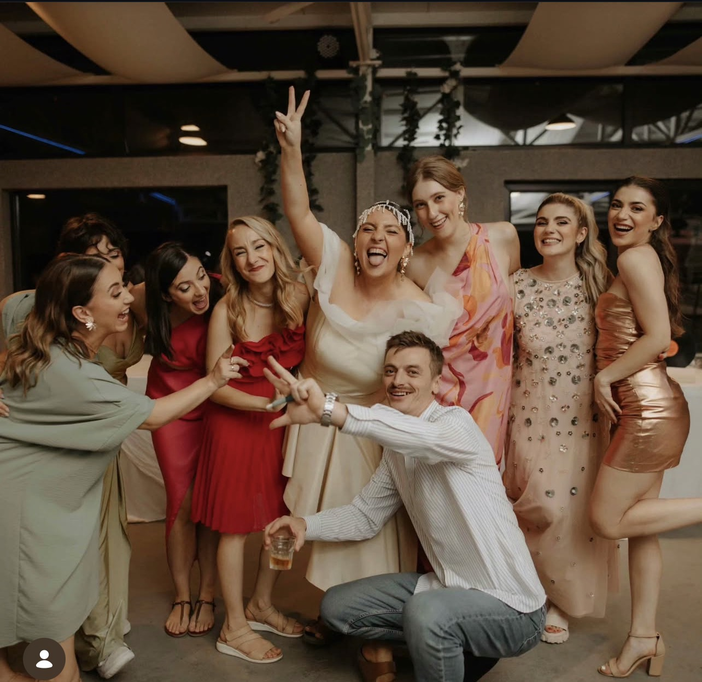
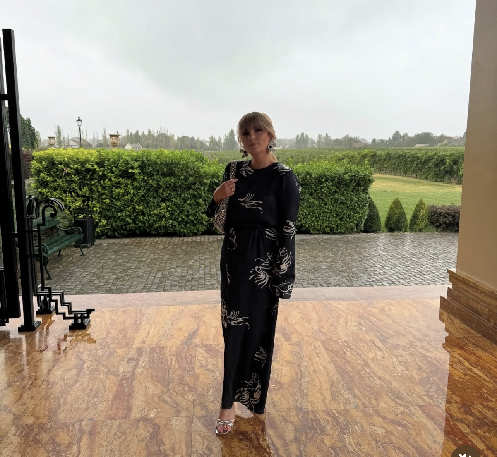
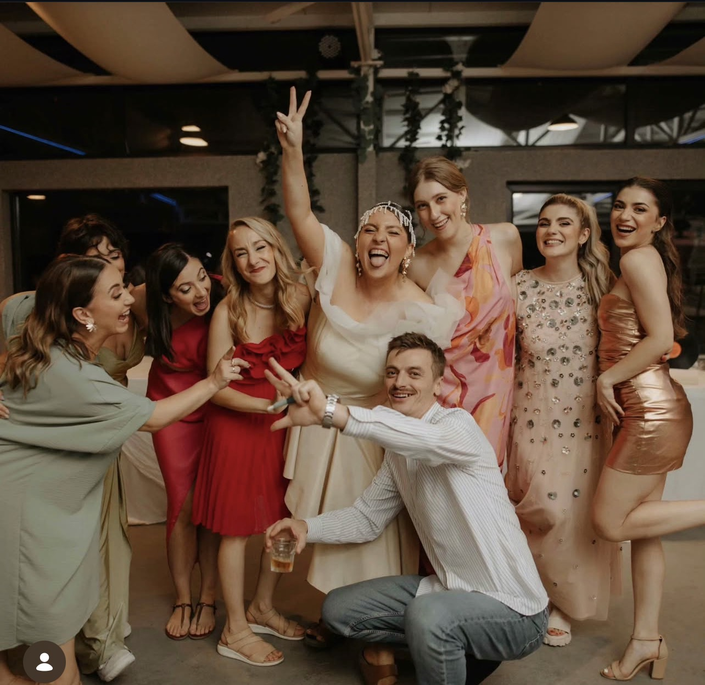
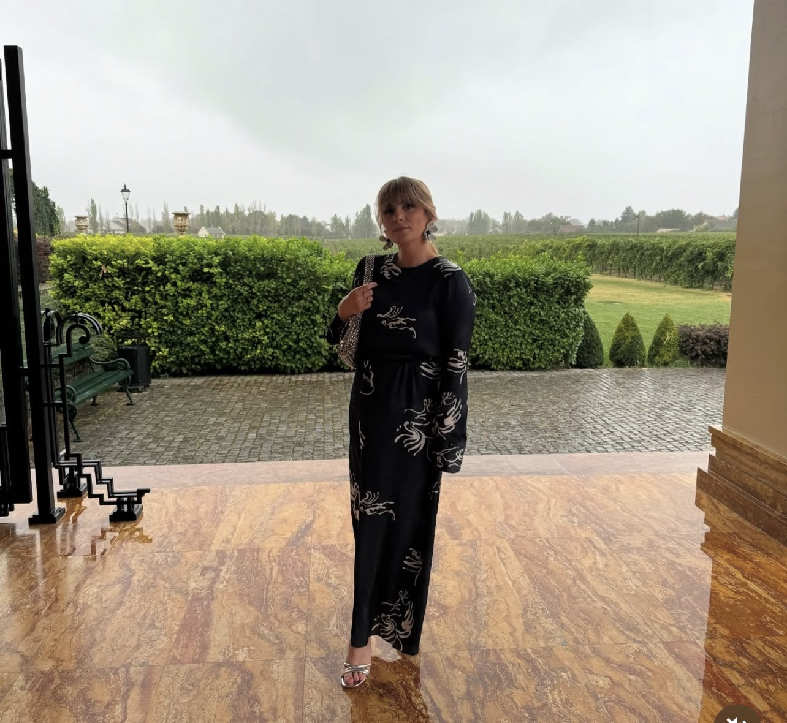
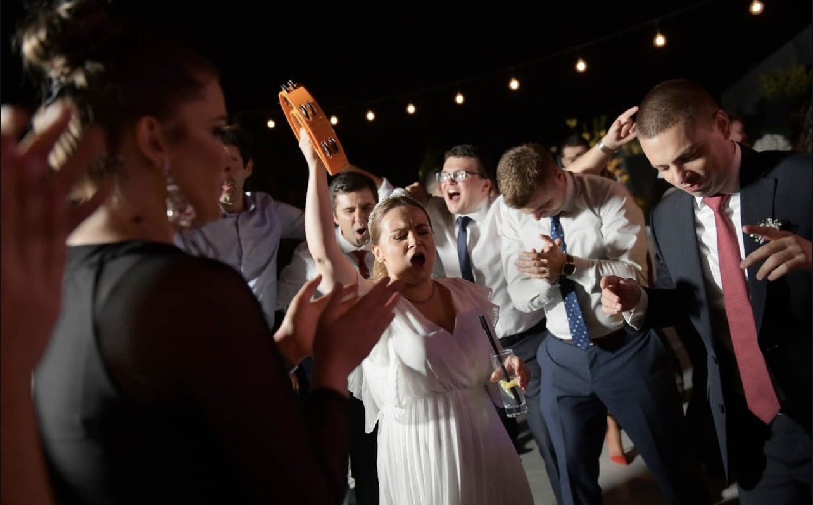
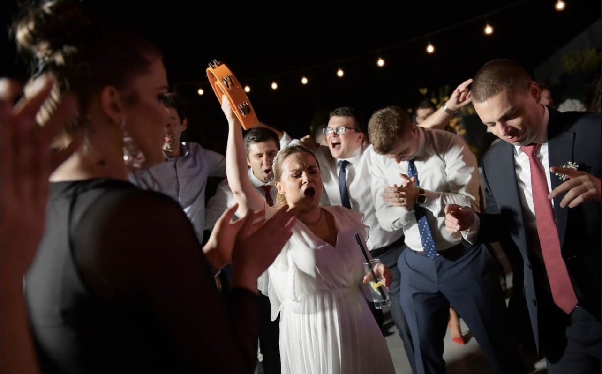

Schedule
We are so excited to celebrate with you. Below is a detailed schedule of our wedding day.
- Our wedding will take place on Friday, July 24th, 2026. We will start with a ceremony at Saint Nicetas (Nikita) Monastery, located on the Skopska Crna Gora Mountain, about 10 miles north of Skopje. The monastery has a small 11th century Christian Orthodox church.
- A shuttle will pick everyone up from the city center at Hotel Park (see Accommodation tab) at 4:15pm. The ride to the monastery takes 30 minutes.
- The ceremony will start at 5pm sharp and it will take one hour.
- After the ceremony and some refreshments, the shuttle will bring everyone back to Hotel Park where the reception also will take place.
- Seating of guests starts at 7:30pm.
- Toast and first dance at 8pm.
- Dinner a 9pm (but worry not, appetizers will be served prior).
- The reception will go until 12am. Expect modern music, traditional dances, and a great party.
- A shuttle will take everyone who wishes to join us for an afterparty at a venue close to the monastery,
- Afterparty 12am-late
- A shuttle will take everyone back to the city center around 3am; individual taxis may be arranged as well
- The welcome party venue is next to the monastery.
- A shuttle will pick everyone who wishes to join from the city center at Hotel Park at 4:30pm.
- Dinner will be served at 5:00pm.
- There will be music and some traditional Macedonian dance lessons to prepare everyone for the wedding festivities.
- A shuttle will drop everyone off at back at Hotel Park at 9:30-10pm to prepare for the next day.
Travel to Skopje
The main airport is Skopje International Airport. Turkish Airlines offers convenient connections through Istanbul (if coming from the West coast), but other major European hubs have a connection to Skopje. There is also Ohrid St. Paul The Apostle Airport, a smaller airport in Ohrid (2.5 hours away from Skopje), which might make sense for people that want to stay in Ohrid and leave from there. If planning to extend the stay and travel around Macedonia (highly recommend), perhaps nice to rent a car at the airport. Parking is manageable in the city, and a car would be very convenient if you want to take daily trips to surrounding areas, or even drive to Ohrid (a must-see) and spend a few days there. The hotels where you have booked accommodation likely have an airport shuttle service to get you to the city center (30-40mins away from airport). Another options is a shuttle bus that takes passengers from the airport to the city center (the bus ticket is about $4). You can find the timetable here: https://skp.airports.com.mk/en-EN/passenger-guide/to-from-the-airport/page/bus There are also taxis that can take you to the city center (cost is about $15-25).
Wedding Attire
We suggest elegant attire suitable for a formal celebration for the reception. If joining us at the church for the ceremony, we recommend covering the shoulders. Below are some examples of our friends' weddings. Women tend to wear cocktail or formal dresses, while men wear suits or tuxedos. Given that the temperature will be in the 90s, wearing lighter materials is probably a good idea.


 





 

Accommodation
We recommend staying at Hotel Park. It is a 5-star hotel. This is also where the reception will take place and where the shuttles will do pick-up/drop-off to the welcome party, ceremony, and after-party. The rooms range from $80-100/night. Please make your booking at the following link (suggested by June 1): https://parkhotel.mk (Unfortunately, there is no code as this hotel does not do group discounts for wedding guests) There are plenty of other options, too. Here are some other hotels that we'd recommend:
- Hotel Palace ($80-100/night): https://aleksandarpalace.com.mk/rooms/
- Hotel Skopje ($/night): https://hotelskopje.mk
- Hotel Marriott Skopje ($180/night): https://www.marriott.com/en-us/hotels/skpmc-skopje-marriott-hotel/overview/
Getting Around Skopje
While there is no Uber/Lyft, there is a convenient taxi app that you can download to get cabs. One can also catch taxis on the street easily, but better to use the app.
Restaurants to Try
Skopje offers wonderful Macedonian cuisine as well as international options. We will share a curated list of our favorite spots.
Things to Do
There is plenty to do in Skopje. Here are some suggestions for sightseeing:
- Even more to do if willing to travel outside of Skopje (highly recommend!). Here are some suggestions for longer trips:
- Canyon Matka and Matka Caves: https://www.canyonmatka.mk
- Lazar Winery: http://www.lazarwinery.mk
- Aurora Resort and Spa - Berovo: https://auroraresort.mk
Places to Visit in Macedonia
If you have extra time, consider visiting Ohrid, Matka Canyon, or the wine regions nearby. We highly recommend extending your trip.
Contact
You can text or call on WhatsApp with any questions and concerns while in Skopje.
There's an application called Airalo that you can use to purchase data on your phone that is compatible with
Macedonia's network providers.
You can also join our WhatsApp group for questions, concerns, coordinating: